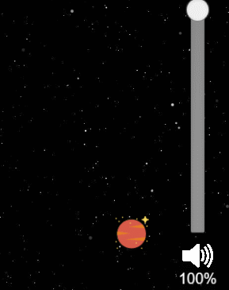

AudioSource
介紹
- 用於播放AudioClip的組件
- 屬性如下
- Clip：音頻資源AudioClip
- Loop：是否循環播放
- PlayOnAwake：是否在組件激活時自動播放
- Volume：音量大小 (0 ~ 1)
瀏覽器音效播放限制
-
預設情況下無法自動播放音效
- 此處的自動指不做任何人為操作，程式直接播放
-
必須先點擊網站上的某處，才可正常播放
-
參考 Chromium AutoPlay、MDN
AudioSource - 事件
- STARTED：開始播放時觸發
- ENDED：播放完畢時觸發
AudioSource - 常用組件接口
- play()
- 播放音效
- pause()
- 暫停播放
- stop()
- 停止播放
- playOneShot(audioClip, volumeScale)
- 用於播放短音效
- 需要指定要播放的AudioClip
- 最終音量為this.volume * volumeScale
- 不可暫停、不可停止
- 不會觸發ENDED的事件監聽
AudioSource – 實務應用
- 遊戲通常統一控制音量、靜音
- AudioSource可能分散於各節點上
- 用一個AudioManager去管控所有AudioSource
- 實現音量條功能
- 使用Slider組件 
- 監聽Slider組件滑動事件
- 設定volume
-
AudioSource監聽音量變更的事件
public static registerVolumeEvent(audioSource: AudioSource) { AudioManager.Instance.node.on(AudioManagerEvent.onVolumeChanged, (newVolume: number) => { audioSource.volume = newVolume }) } protected start(): void { if(this.audioSource){ this.audioSource.volume = AudioManager.Volume; AudioManager.registerVolumeEvent(this.audioSource); } } -
改善作法
- 需要在各個有用到AudioSoruce的組件中手動初始化
- => 自定義一個組件，繼承自AudioSource
- 在start階段初始化音量及監聽事件
{kind=link}